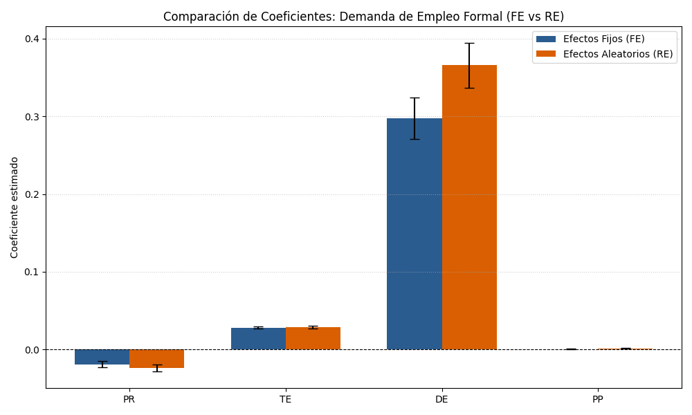

Determinantes del Empleo Formal Cantonal en el Ecuador (2015-2024)
Un Análisis de Datos de Panel con Variables de Productividad y Estructura Empresarial
Resumen
En este estudio se analizan los determinantes del empleo formal cantonal en el Ecuador durante el periodo 2015-2024, integrando factores de productividad laboral, escala y densidad empresarial a nivel territorial. A través de un panel de datos balanceado de 221 municipios estimado mediante Efectos Fijos (FE) y Mínimos Cuadrados Generalizados Factibles (FGLS) para corregir autocorrelación y heterocedasticidad, se evalúa cómo la productividad media del trabajo y la escala de la firma impactan en la generación de plazas de empleo formal con afiliación activa al IESS. Los resultados empíricos indican la presencia de una relación negativa y no lineal (cóncava) entre la productividad laboral y el empleo formal en cantones con mayor desarrollo productivo (VAB Alto), sugiriendo un efecto sustitución de capital por trabajo mediante procesos de automatización y modernización. En contraste, en territorios de menor desarrollo relativo (VAB Bajo), el empleo formal exhibe una altísima dependencia y sensibilidad lineal respecto al tamaño y densidad de facturación de las pocas micro y pequeñas empresas formalizadas locales.
Palabras clave: Empleo Formal Cantonal, Productividad Laboral, Datos de Panel, Efectos Fijos, FGLS, Ecuador.
Clasificación JEL: J23, L25, R12, C23, O18.
1 Introducción
El mercado de trabajo ecuatoriano enfrenta un desequilibrio estructural caracterizado por altos índices de subempleo e informalidad. En este contexto, la definición operativa de empleo formal en el país se establece a través de la afiliación activa a la seguridad social (IESS). De acuerdo con Díaz-Sánchez and Correa (2024), a inicios de 2022 el mercado laboral formal en el Ecuador representaba el 42.5%, mientras que el sector informal absorbía al 51.4% de la población ocupada. A nivel cantonal, la capacidad de generación de empleo formal con afiliación a la seguridad social depende de la escala de producción agregada local, la densidad de empresas activas y el volumen de facturación mercantil.
2 Planteamiento del Problema
Las investigaciones macroeconómicas tradicionales suelen ignorar estas dinámicas subnacionales debido a sesgos de agregación. Este estudio aborda dicho vacío cuantificando las elasticidades de la demanda de trabajo formal respecto a indicadores de productividad laboral y escala empresarial en el territorio. El problema central consiste en evaluar cómo las diferencias cantonales en productividad laboral y escala empresarial determinan la demanda de empleo formal en el Ecuador, controlando por la heterogeneidad territorial inobservable que sesga las estimaciones de mínimos cuadrados ordinarios.
3 Justificación
Este estudio se justifica por tres razones analíticas diferenciadas. En primer lugar, responde a la necesidad de superar las limitaciones de representatividad territorial de los modelos tradicionales en Ecuador. Como demuestran Matano et al. (2020), la segmentación espacial del empleo y las primas salariales en el país generan desequilibrios que las estimaciones nacionales agrupadas no logran identificar. El uso de un panel cantonal de 221 municipios permite aislar este sesgo aplicando estimadores consistentes de efectos fijos.
En segundo lugar, la investigación aporta evidencia empírica clave sobre la heterogeneidad del empleo según la escala cantonal. Como evidencia Camino-Mogro (2023), las políticas fiscales uniformes no generan empleo formal diferencial por sector, sugiriendo que la heterogeneidad territorial es el canal relevante. Esto refuerza nuestro argumento de que es necesario analizar el empleo a través de cantones de manera diferenciada para capturar la verdadera estructura de respuesta del mercado de trabajo ecuatoriano.
Finalmente, los resultados tienen implicaciones prácticas para el diseño de políticas públicas. Las elasticidades estimadas proveen insumos para formular políticas de fomento al empleo y simplificación de trámites adaptadas a la estructura empresarial específica de cada cantón, evitando regulaciones nacionales uniformes que suelen desincentivar la formalización en territorios de menor desarrollo relativo.
4 Revisión de la Literatura
La dinámica de la demanda de trabajo y la formalización laboral a nivel territorial en economías en desarrollo ha sido ampliamente debatida en la literatura empírica y teórica reciente.
4.1 Síntesis de los enfoques teóricos
Para comprender las fuerzas dinámicas que determinan la demanda de empleo formal a nivel subnacional, el análisis se sustenta en tres enfoques teóricos interrelacionados. En primer lugar, la teoría del dualismo estructural y segmentación laboral postula que en economías en desarrollo coexisten mercados de trabajo formal y de subsistencia informal, de acuerdo con las formulaciones iniciales de Harris y Todaro. Esta segmentación se debe a barreras de entrada institucionales y a los costos de cumplimiento normativo, tales como la afiliación a la seguridad social y el salario básico, que empujan a las unidades económicas más vulnerables hacia la informalidad.
En segundo lugar, la teoría del cambio tecnológico sesgado explica cómo la introducción de innovaciones y capital tecnológico en las firmas sustituye puestos de trabajo de baja calificación o tareas repetitivas, elevando simultáneamente la productividad media de los trabajadores calificados que permanecen dentro de las firmas.
Finalmente, la nueva geografía económica y las economías de aglomeración plantean que la concentración territorial de empresas y la densidad mercantil generan externalidades positivas que reducen los costos de transacción y facilitan el emparejamiento laboral, promoviendo la formalización en zonas de alta densidad urbana.
4.2 Síntesis de la evidencia empírica
La evidencia empírica internacional y local aporta lecciones metodológicas en tres niveles. A nivel internacional, diversos estudios demuestran que los incrementos de productividad impulsados por la tecnificación pueden producir un desplazamiento del empleo formal neto en el corto plazo a través del efecto sustitución si la elasticidad de sustitución capital-trabajo es mayor a la unidad, aunque a largo plazo se logre expandir la demanda de empleo por efectos de escala. A nivel latinoamericano, el empleo formal se encuentra fuertemente correlacionado con la escala empresarial y el ciclo económico, donde las micro y pequeñas empresas sufren barreras de financiamiento que les impiden formalizar a su personal debido a su baja productividad relativa.
En el contexto ecuatoriano, investigaciones sobre la estructura salarial y el empleo muestran una fuerte segmentación espacial con primas salariales urbanas y una alta heterogeneidad regional. Asimismo, estudios sobre incentivos fiscales y flujos migratorios recientes evidencian cómo las rigideces del mercado de trabajo ecuatoriano y los cambios en la oferta laboral alteran los incentivos de formalización de las firmas, sugiriendo la necesidad de analizar las respuestas de las firmas utilizando datos a escala cantonal.
5 Metodología Econométrica y Fundamento Teórico
El análisis del empleo formal cantonal en el Ecuador se articula sobre un marco conceptual compuesto por una teoría principal de demanda factorial y tres enfoques teóricos complementarios que capturan las distorsiones estructurales y espaciales del mercado laboral en desarrollo.
5.1 Fundamento Teórico
5.1.1 Teoría Principal: Demanda Neoclásica de Factores y Maximización de la Firma
La columna vertebral analítica de esta investigación es la Teoría Neoclásica de la Demanda de Factores de la Firma. Bajo este enfoque, las firmas actúan como agentes optimizadores que determinan su nivel de empleo formal a partir de la maximización de sus beneficios económicos en mercados de factores competitivos o semi-regulados.
Supongamos que la producción agregada de un cantón \(i\) en el periodo \(t\) se describe mediante una función de producción del tipo Cobb-Douglas con rendimientos a escala:
\[Y_{it} = A_{it} K_{it}^\alpha L_{it}^\beta \tag{1}\]
Donde \(Y_{it}\) es el producto (VAB cantonal), \(A_{it}\) es la productividad total de los factores (cambio tecnológico), \(K_{it}\) es el stock de capital, y \(L_{it}\) representa el empleo formal contratado. La firma representativa maximiza su función de beneficios:
\[\Pi_{it} = P_{it} Y_{it} - W_{it} L_{it} - R_{it} K_{it} \tag{2}\]
Donde \(P_{it}\) es el nivel general de precios local, \(W_{it}\) es el salario nominal formal regulado y \(R_{it}\) representa el costo de uso del capital. La condición de primer orden respecto al factor trabajo (\(L_{it}\)) determina que el producto marginal del trabajo debe igualar al salario real:
\[\frac{\partial Y_{it}}{\partial L_{it}} = \beta \frac{Y_{it}}{L_{it}} = \frac{W_{it}}{P_{it}} \tag{3}\]
Al tomar logaritmos y reordenar los términos, el empleo formal óptimo de equilibrio se convierte en una función de la productividad media del trabajo (\(Y_{it}/L_{it}\)), el costo del factor y las características tecnológicas del territorio. Esta relación constituye el núcleo del modelo, donde la productividad laboral real media (\(PR_{it} = \ln(Y_{it}/L_{it})\)) actúa como el determinante directo del nivel de empleo.
5.2 Especificación Econométrica
Adaptando los esquemas teóricos anteriores a una estructura de datos de panel, planteamos la ecuación de demanda de trabajo en la Equation 4:
\[LE_{it} = \beta_0 + \beta_1 PR_{it} + \beta_2 TE_{it} + \beta_3 DE_{it} + \beta_4 PP_{it} + \alpha_i + \mu_{it} \tag{4}\]
Donde \(LE_{it}\) es el logaritmo del empleo promedio formal del cantón \(i\) en el año \(t\), \(PR_{it}\) representa el logaritmo de la productividad media del trabajo, \(TE_{it}\) es el logaritmo del tamaño promedio de facturación empresarial, y \(DE_{it}\) es el logaritmo de la densidad laboral de las firmas. El coeficiente \(PP_{it}\) controla la participación porcentual del cantón en el producto de su provincia, mientras que \(\alpha_i\) captura la heterogeneidad inobservable cantonal constante y \(\mu_{it}\) es el error estocástico idiopático.
Se hipotetiza que la elasticidad del empleo formal al tamaño empresarial es decreciente con el nivel de VAB cantonal, dado que en cantones menos desarrollados la firma representativa tiene menor acceso a crédito y tecnología, haciendo al empleo formal más sensible a variaciones en la escala productiva local.
5.3 Definición y Descripción de Variables
La Table 1 detalla la definición metodológica y fuentes de las variables del modelo:
| Variable | Tipo | Fórmula Operativa | Descripción del Indicador | Fuente |
|---|---|---|---|---|
LE |
Dependiente | \(\ln(\text{empleo\_prom})\) | Escala del mercado laboral formal cantonal. | INEC / DIEE |
PR |
Independiente | \(\ln(\text{vab} / \text{empleo\_prom})\) | Proxy de eficiencia productiva local. | BCE / INEC |
TE |
Control | \(\ln(\text{ventas\_totales} / \text{num\_emp})\) | Escala de facturación de la firma representativa. | INEC / DIEE |
DE |
Control | \(\ln(\text{empleo\_prom} / \text{num\_emp})\) | Intensidad de absorción laboral de las firmas. | INEC / DIEE |
PP |
Control | Expresada en nivel (0 - 100) | Centralidad y jerarquía económica del cantón. | BCE / Propio |
5.4 Modelos de Estimación y Pruebas de Diagnóstico
La estimación de los parámetros de interés parte de la comparación entre los estimadores de Efectos Fijos y Efectos Aleatorios. El modelo de Efectos Fijos permite que el término de efecto individual inobservable de cada cantón esté correlacionado con los regresores explicativos, estimándose a través de la transformación de variables respecto a su media temporal. Por el contrario, el modelo de Efectos Aleatorios asume que este efecto individual se comporta como una perturbación aleatoria incorrelacionada con las variables explicativas del modelo.
Para determinar formalmente cuál de las dos especificaciones es la adecuada, se aplica el Test de Hausman, cuya hipótesis nula establece la ausencia de correlación sistemática entre los efectos individuales y los regresores explicativos. Un rechazo de esta hipótesis determina de forma unánime que el estimador de Efectos Fijos es el único consistente y eficiente para la inferencia.
Posteriormente, se aplican pruebas de diagnóstico sobre los errores del modelo. La autocorrelación temporal se evalúa mediante el test de primer orden de Wooldridge para comprobar la persistencia serial de los residuos. La heterocedasticidad inter-cantonal se examina a través de la prueba de Wald modificada para efectos fijos, la cual evalúa la hipótesis nula de homocedasticidad frente a la presencia de varianzas grupales disímiles debido a las enormes diferencias geográficas y mercantiles de los municipios. En caso de detectarse simultáneamente la presencia de heterocedasticidad o correlación serial, se procede a estimar el modelo mediante Mínimos Cuadrados Generalizados Factibles (FGLS) con errores estándar corregidos, garantizando estimadores eficientes bajo paneles con perturbaciones complejas.
6 Resultados y Discusión
Se estimaron los modelos de regresión para datos de panel (mínimos cuadrados ordinarios agrupados, efectos fijos y efectos aleatorios) y la especificación robusta de mínimos cuadrados generalizados factibles (FGLS) sobre la muestra balanceada cantonal de Ecuador para el periodo 2015-2024.
6.1 Estadísticos Descriptivos de la Muestra
La base de datos conforma un panel balanceado de 221 cantones para el periodo 2015-2024, acumulando 2,210 observaciones. La Table 2 detalla el comportamiento descriptivo general, inter-cantonal (between) e intra-temporal (within):
| Variable | Variación | Media | Desviación Estándar | Mínimo | Maksimo | Observaciones |
|---|---|---|---|---|---|---|
LE |
Overall | 7.6693 | 1.4836 | 4.7958 | 13.7182 | \(N = 2210\) |
| Between | 1.4859 | 4.8964 | 13.6655 | \(n = 221\) | ||
| Within | 0.0477 | 7.4441 | 7.8947 | \(T = 10\) | ||
PR |
Overall | -3.2655 | 0.6123 | -5.3747 | 0.6725 | \(N = 2210\) |
| Between | 0.5463 | -4.1766 | -0.7532 | \(n = 221\) | ||
| Within | 0.2789 | -5.8973 | -1.1628 | \(T = 10\) | ||
TE |
Overall | 10.5637 | 1.3901 | -6.5104 | 14.0851 | \(N = 2210\) |
| Between | 1.2078 | 4.0986 | 13.7870 | \(n = 221\) | ||
| Within | 0.6927 | -5.5065 | 12.5568 | \(T = 10\) | ||
DE |
Overall | 0.4272 | 0.4181 | -0.2987 | 2.0293 | \(N = 2210\) |
| Between | 0.4175 | -0.2481 | 2.0025 | \(n = 221\) | ||
| Within | 0.0356 | 0.3104 | 0.5543 | \(T = 10\) | ||
PP |
Overall | 10.8597 | 19.4740 | 0.0720 | 93.9932 | \(N = 2210\) |
| Between | 19.2623 | 0.0999 | 92.0415 | \(n = 221\) | ||
| Within | 3.1169 | -11.3998 | 44.1326 | \(T = 10\) |
6.2 Diagnósticos de Colinealidad y Correlación
6.2.1 Matriz de Correlación de Pearson
Las correlaciones lineales bivariadas muestran que la variable dependiente LE está fuertemente correlacionada de forma positiva con la participación provincial PP (\(0.666\)), el tamaño de facturación TE (\(0.539\)) y la densidad de firmas DE (\(0.536\)). Todos los coeficientes marcados con un asterisco son significativos al 1% de nivel de confianza:
| Variables | LE |
PR |
TE |
DE |
PP |
|---|---|---|---|---|---|
LE |
1.0000 | ||||
PR |
-0.1391* | 1.0000 | |||
TE |
0.5385* | 0.0073 | 1.0000 | ||
DE |
0.5362* | -0.1455* | 0.4730* | 1.0000 | |
PP |
0.6655* | 0.0961* | 0.2192* | 0.1703* | 1.0000 |
6.2.2 Factor de Inflación de la Varianza (VIF)
El análisis del VIF confirma que todos los regresores poseen valores cercanos a la unidad, descartando cualquier sesgo crítico por multicolinealidad en el modelo (Media VIF: 1.19, Condición de número: 25.93):
| Variable | VIF | Tolerancia (\(1/\text{VIF}\)) |
|---|---|---|
DE |
1.34 | 0.7472 |
TE |
1.33 | 0.7529 |
PP |
1.07 | 0.9344 |
PR |
1.04 | 0.9592 |
6.3 Resultados de la Estimación de Modelos de Panel
A continuación se reportan los coeficientes estimados y errores estándar obtenidos mediante regresiones agrupadas (Pooled OLS), Efectos Fijos (FE) y Efectos Aleatorios (RE) en la Table 3:
| Regresores | Pooled OLS | Efectos Fijos (FE) | Efectos Aleatorios (RE) |
|---|---|---|---|
PR |
-0.3748*** | -0.0189*** | -0.0242*** |
| (0.0286) | (0.0041) | (0.0045) | |
TE |
0.2991*** | 0.0282*** | 0.0288*** |
| (0.0142) | (0.0014) | (0.0015) | |
DE |
1.0077*** | 0.2978*** | 0.3659*** |
| (0.0475) | (0.0268) | (0.0290) | |
PP |
0.0435*** | 0.0006 | 0.0015*** |
| (0.0009) | (0.0004) | (0.0004) | |
| Constante | 2.3836*** | 7.1130*** | |
| (0.1743) | (0.0625) | ||
| Obs | 2210 | 2210 | 2210 |
| \(R^2\) (Within) | 0.2170 | 0.2119 |
6.3.1 Contraste y Selección del Estimador: Test de Hausman
El test de especificación de Hausman arrojó un rechazo unánime de la hipótesis nula con un estadístico \(\chi^2(4) = 406.40\) (\(p < 0.0001\)), confirmando que la heterogeneidad inobservable de los cantones está correlacionada con los regresores explicativos. Este contraste valida la selección del estimador de Efectos Fijos (FE) como el único consistente y eficiente.
La comparación gráfica de los coeficientes de regresión estimados se detalla a continuación:

6.4 Corrección de Perturbaciones: Modelo GLS Robusto (FGLS)
Dado que las pruebas de diagnóstico detectaron problemas severos de heterocedasticidad inter-cantonal (Wald Modificado: \(\chi^2_{221} = 2050.74\), \(p<0.0001\)), se aplicó la estimación por Mínimos Cuadrados Generalizados Factibles (FGLS) para corregir la variabilidad de las perturbaciones grupales y la autocorrelación serial de primer orden en el término de error.
La Table 4 resume los resultados de FGLS a nivel global y segmentado por subgrupos de desarrollo cantonal (VAB):
| Regresores | Modelo Global | VAB Alto | VAB Medio | VAB Bajo |
|---|---|---|---|---|
PR (Productividad) |
-0.2795*** | -0.7025*** | -0.2611*** | -0.0783** |
| (0.0489) | (0.0939) | (0.0720) | (0.0307) | |
PR2 (Productividad\(^2\)) |
-0.0124 | -0.0567*** | 0.0009 | -0.0010 |
| (0.0078) | (0.0146) | (0.0117) | (0.0049) | |
TE (Tamaño Empresa) |
0.0825*** | 0.0353*** | 0.0184*** | 0.1730*** |
| (0.0043) | (0.0057) | (0.0023) | (0.0063) | |
DE (Densidad Empresa) |
0.8911*** | 0.4752*** | 0.6236*** | 0.4785*** |
| (0.0255) | (0.0383) | (0.0315) | (0.0323) | |
PP (Part. Provincial) |
0.0359*** | 0.0249*** | 0.0263*** | 0.0187*** |
| (0.0009) | (0.0007) | (0.0015) | (0.0030) | |
| Constante | 5.2033*** | 6.1997*** | 6.0028*** | 4.3342*** |
| (0.0899) | (0.1658) | (0.1171) | (0.0810) | |
| Obs | 2210 | 740 | 730 | 740 |
| Wald \(\chi^2\) | 4042.66 | 1537.65 | 1229.28 | 1075.96 |
Errores estándar entre paréntesis. Significancia estadística: ** \(p<0.01\), ** \(p<0.05\), * \(p<0.1\).*
6.5 Discusión y Análisis de Elasticidades
- La Relación No Lineal de la Productividad (
PRyPR2): En los cantones de VAB Alto, tanto el coeficiente de productividad lineal (\(\beta_{\text{PR}} = -0.7025^{***}\)) como el término cuadrático (\(\beta_{\text{PR2}} = -0.0567^{***}\)) son negativos y altamente significativos. Esto demuestra que en las economías cantonales más grandes y complejas de Ecuador, el aumento de la productividad media del trabajo genera un desplazamiento de empleo formal que se acelera de manera no lineal. Esto es plenamente consistente con el efecto de sustitución capital-trabajo y la automatización tecnológica en firmas de gran escala. En contraste, en cantones de VAB Medio y Bajo, el término cuadrático no es estadísticamente significativo y el efecto de la productividad opera de forma estrictamente lineal. - Escala y Densidad Empresarial (
TEyDE): La elasticidad positiva del empleo respecto al tamaño promedio de facturación empresarial (TE\(= 0.0825\) global) y la densidad de las firmas (DE\(= 0.8911\) global) corrobora que la formalización laboral depende directamente de la escala corporativa. Este impacto es sumamente alto en los cantones con VAB Bajo (\(\beta_{\text{TE}} = 0.1730\)), donde la supervivencia financiera y facturación de los pocos establecimientos estructurados determina críticamente la oferta laboral formal de esos territorios.
7 Conclusiones y Limitaciones
7.1 Conclusiones
La evidencia empírica analizada permite concluir que el empleo formal cantonal en el Ecuador no responde de manera homogénea al dinamismo productivo, sino que se encuentra condicionado por la escala de las firmas y la estructura económica del territorio. La elasticidad negativa observada frente a incrementos en la productividad laboral media revela un comportamiento defensivo y de optimización de costos en los cantones con mayor dinamismo mercantil (VAB Alto), donde las empresas prefieren intensificar sus procesos mediante la sustitución de capital por trabajo a través de la modernización tecnológica y la automatización.
Asimismo, se evidencia una fuerte dependencia y sensibilidad del empleo formal respecto a la escala de ventas y la densidad empresarial en las regiones con menor desarrollo productivo (VAB Bajo). En estos municipios rezagados, las micro y pequeñas empresas constituyen la única fuente plausible de absorción laboral formal, lo que exige concentrar los incentivos de desarrollo directamente en garantizar la viabilidad y supervivencia mercantil de estas firmas locales antes que en imponer cargas tributarias homogéneas.
Finalmente, el estudio demuestra que el diseño de políticas públicas uniformes a nivel nacional resulta ineficaz para promover la formalización en el mercado laboral ecuatoriano. Los resultados sugieren la necesidad de implementar estrategias de fomento productivo con un enfoque territorial diferenciado que flexibilicen y simplifiquen la regulación laboral y administrativa en los cantones de bajo y medio desarrollo relativo, permitiendo que las firmas locales logren la escala mínima requerida para soportar los costos de formalización previsional.
7.2 Limitaciones
A pesar del rigor econométrico, el análisis presenta limitaciones metodológicas importantes. En primer lugar, existe una restricción en la identificación causal del modelo debido a la posible endogeneidad por causalidad inversa de la productividad laboral, por lo cual los coeficientes reportados deben interpretarse estrictamente en términos de asociación y correlación. En segundo lugar, existe un sesgo potencial por variables omitidas debido a la carencia de microdatos anuales detallados sobre la inversión pública local y el flujo de financiamiento corporativo a nivel cantonal. Por último, la variable dependiente fundamentada en los registros de afiliación activa al IESS constituye un indicador administrativo de formalidad que podría subestimar el empleo real y la dinámica de acuerdos laborales semiformales no regulados, especialmente en el sector agrícola y las zonas predominantemente rurales.